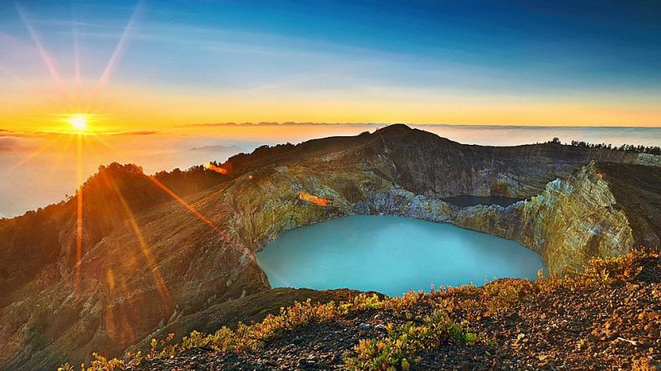
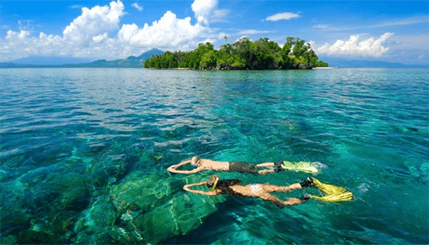
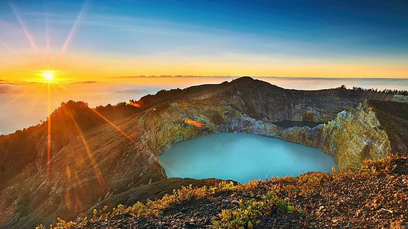
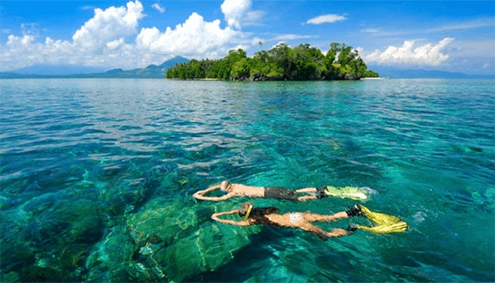

Gunung Bromo
Wisata - Jawa Timur
Wisata Gunung Bromo terletak di Jawa Timur ini memang mengundang banyak wisatawan karena keindahan pemandangan alam dari ketinggian pegunungan, nama Gunung Bromo sendiri diambil dari salah satu dewa utama dalam agama Hindu yaitu Brahma, gunung ini memiliki ketinggian 2329 meter di atas permukaan air laut. Status Gunung Bromo masih aktif membuat daya tarik tersendiri bagi wisatawan.


 


